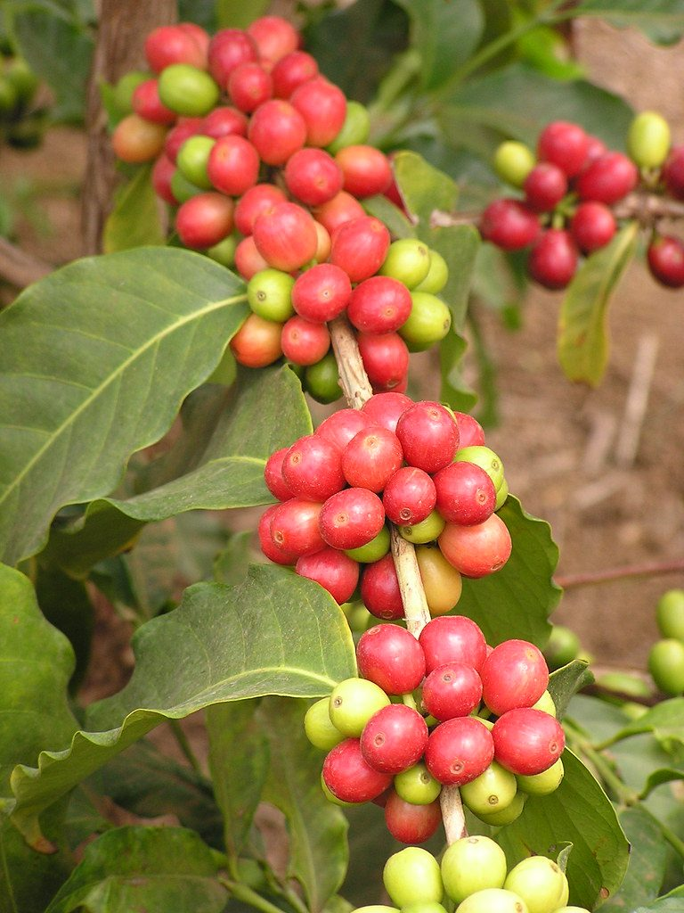
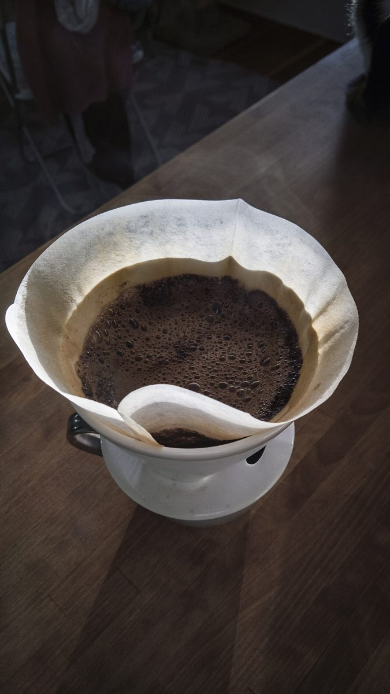

CAFE / 愛知県常滑市栄町
TAKECOFFEEROASTERY
愛知県常滑市にあるカフェ「TAKE COFFEE ROASTERY」のご案内ページです。営業時間やメニューなど、詳しいことは準備中。まずはInstagramをのぞいてみてください。

制作側の連想
「TAKE」から、カチンコの「テイク」へ。
店名の由来は分かりません。制作側は「TAKE」という言葉から、映画の撮影で使うカチンコの「テイク1、テイク2…」を連想しました。そこでこのページは、コーヒーが一杯になるまでの一般的な流れを、5つのテイクとして並べています。お店の理念・由来とは無関係な、制作側の連想です。お店の実際の工程や提供内容を示すものではありません。
5つのテイク(イメージ)
実から、一杯まで。
写真は常滑市やお店のものではありません。国外・撮影地不明のフリー素材で、一般的なコーヒーの流れのイメージです。
-
TAKE 1
コーヒーの実COFFEE CHERRY
豆になる前の、赤く色づく実。コーヒーは果実の中の種です(一般的なイメージ)。

国外のイメージ(米国) -
TAKE 2
生豆GREEN BEANS
焙煎の前の、淡い色の豆。麻袋に入った姿のイメージです。

撮影地不明のイメージ -
TAKE 3
焙煎豆ROASTED BEANS
熱が加わって茶色に色づき、艶が出た豆のイメージです。

撮影地不明のイメージ -
TAKE 4
抽出EXTRACTION
お湯を注いで成分を取り出す、ドリップのイメージです。

撮影地不明のイメージ -
TAKE 5
一杯A CUP
カップに注がれた一杯。ここでカット、のイメージです。

国外のイメージ(ノルウェー)
SCENE 1 / ご案内
お店のこと(確認できたものだけ)
- 所在地
- 〒479-0836
愛知県常滑市栄町３丁目72 - 電話
- なし
- 営業時間
- 準備中
- 定休日
- 準備中
- ご予約
- 準備中
- 駐車場
- 準備中